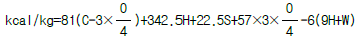
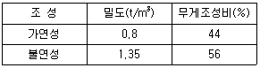
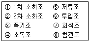
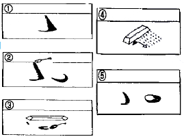
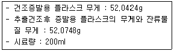

폐기물처리기사 (2004-03-07 기출문제)
1과목: 폐기물 개론
1. 폐기물 1t을 건조시켜 함수율을 50%에서 25%로 감소시켰다. 폐기물 중량은 얼마로 되겠는가?
- 0.42t
- 0.53t
- 0.67t
- 0.75t
(정답률: 알수없음)

2. 파쇄에 필요한 일(Work)을 구하는 식으로서 W는 일, X를 입자들 크기라고 하면 dW=-C(dx/Xn)의 형태로 표현되는 식이 있다. 파쇄에 필요한 일량을 표면적 증가에 비례 (n=2)한다고 가정하여 구하는 법칙은?
- Rittinger 법칙
- Kick 법칙
- Bond 법칙
- Rosin법칙
(정답률: 알수없음)
3. 파쇄장치 중 전단식파쇄기에 관한 설명으로 틀린 것은?
- 고정칼이나 왕복칼 또는 회전칼을 이용하여 폐기물을 전단한다.
- 충격파쇄기에 비하여 대체적으로 파쇄속도가 느리다.
- 파쇄후 폐기물의 입도가 거칠지만 파쇄물의 크기를 고르게 할 수 있다.
- 파쇄시 이 물질혼입에 대한 영향이 적다.
(정답률: 알수없음)
4. 채취한 쓰레기 시료에 대한 성상분석절차 중 가장 먼저 시행 하는 것은?
- 밀도측정
- 분류
- 건조
- 절단 및 분쇄
(정답률: 알수없음)
5. 쓰레기의 Pipe-line 수송에 관한 설명으로 알맞지 않은 것은?
- 쓰레기 발생밀도가 낮은 곳에서 현실성이 크다.
- 가설후의 경로변경이 곤란하고 설비비가 막대하다.
- 장거리이용이 곤란하다.
- 투입구를 이용한 범죄나 사고의 위험이 있다.
(정답률: 알수없음)
6. 함수율 90%(중량비)인 슬러지내 고형물은 비중이 2.5인 FS 1/3과 비중이 1.0인 VS 2/3로 되어 있다. 이 슬러지의 비중은? (단, 물의 비중은 1이다.)
- 0.98
- 1.02
- 1.18
- 1.25
(정답률: 알수없음)
7. 폐기물 전과정평가(LCA)의 목적과 가장 거리가 먼 것은?
- 환경부하, 저감면에서의 제품,제법 등의 개선점 도출
- 생활양식의 평가와 개선 목표의 도출
- 환경오염부하의 기준치 설정 및 저감기술개발
- 유통,처리,재활용 등 사회 시스템의 검토 및 평가
(정답률: 알수없음)
8. 다음 식은 쓰레기의 화학적 조성분석치로부터 발열량을 산출하는 식이다. 다음 중 어떤식에 속하는가?

(단, C, H, O, S, W는 %)- Dulong식
- Steuer식
- Scheurer-Kestner식
- Gumg식
(정답률: 알수없음)
9. 다음 중 쓰레기 분석을 행할 때의 유의 사항 중 틀린것은?
- 수분측정시 시료채취일이 아닌 다른 날에 행할 경우에는 밀봉ㆍ보존할 것
- 쓰레기와 직접 접촉되는 작업을 할 때는 안전 문제에 각별히 주의할 것
- 년중 실질적 수분의 평균값을 알기 위해서는 강우시 2회 이상 수집분석할 것
- 어느 지역의 쓰레기의 성상을 파악하기 위해서는 적어도 연 4회(각 계절별로 봄, 여름, 가을, 겨울)측정 할 것
(정답률: 알수없음)
10. 어느 도시의 폐기물 수거량이 2,500,000ton/년 이며, 수거인부는 1일 4,500명이고 수거대상 인구는 5,700,000인이라면 수거인부의 일 평균작업시간이 8시간이라고 할 때 MHT은?
- 약 3.1MHT
- 약 4.3MHT
- 약 4.8MHT
- 약 5.3MHT
(정답률: 알수없음)
11. 어떤 폐기물의 압축전 부피는 1.8m3이고 압축후의 부피는 0.38m3이었다. Compaction Ratio(압축비)는?
- 0.21
- 0.79
- 3.47
- 4.74
(정답률: 알수없음)
12. 다음 중 폐기물의 발생시점에 미치는 인자가 아닌 것은?
- 소유자의 객관적 가치관
- 수요 장소의 근접성
- 시장성의 변동에 따른 시기
- 고품질 및 저품질에 따른 질적 변화
(정답률: 알수없음)
13. 다음의 폐기물의 관리단계 중 비용이 가장 많이 소요 되는 단계는?
- 중간처리 단계
- 수거 및 운반단계
- 중간처리된 폐기물의 수송단계
- 폐기물의 처분단계
(정답률: 알수없음)
14. 쓰레기를 소각했을 때 남은 재의 중량은 쓰레기의 30%이다. 쓰레기 10ton을 태웠을 때 남은 재의 부피가 2m3라고 하면 재의 밀도는?
- 1.0 ton/m3
- 1.5 ton/m3
- 2.0 ton/m3
- 2.5 ton/m3
(정답률: 알수없음)
15. 폐기물을 Proximate Analysis(개략분석)에 의해 분석할 때 분석대상 항목과 가장 거리가 먼 것은?
- 수분함량
- 겉보기 비중
- 불연성물질(연소되지 않는 불순물)
- 휘발성고형물(강열한 후 손실된 양)
(정답률: 알수없음)
16. 다음과 같은 쓰레기를 적재무게 8t 트럭으로 운반하려는 경우 이 트럭의 적재함 용적은 얼마로 설계하는 것이 적절한가? (단, 쓰레기 조성은 변하지 않는다고 가정하며 이외의 조건은 고려하지 않는다 )

- 7.7m3
- 8.5m3
- 9m3
- 9.7m3
(정답률: 알수없음)
17. 쓰레기 발생량 예측방법 중 모든 인자를 시간에 대한 함수로 나타낸 후 시간에 대한 함수로 표현된 각 영향 인자들 간의 상관관계를 수식화하는 방법은?
- 경향법
- 다중회귀모델
- 회귀직선모델
- 동적모사모델
(정답률: 알수없음)
18. 투입량이 1 ton/h 이고, 회수량이 600 kg/h (그중 회수대상물질은 540 kg/h)이며 제거량은 400 kg/h (그중 회수대상물질은 50 kg/h) 일 때 Worrell에 의한 선별효율은? (단, Worrell 식 E(선별효율)=( x 회수율)( y 기각율) = [(x1/x0) × (y2/y0)] )
- 약 65 %
- 약 70 %
- 약 78 %
- 약 83 %
(정답률: 알수없음)
19. 폐기물의 수거노선 설정시 고려해야 할 사항 중 틀린것은?
- 수거지점과 빈도를 결정할 때 기존정책이나 규정을 참고한다.
- 가능한 한 지형지물 및 도로 경계와 같은 장벽을 이용하여 간선도로 부근에서 시작하고 끝나도록 배치하여야 한다.
- 아주 많은 양의 쓰레기가 발생되는 발생원은 하루 중 가장 먼저 수거한다.
- 가능한 한 반시계방향으로 수거노선을 정하며 U자형 회전은 피하여 수거한다.
(정답률: 알수없음)
20. 직경이 2m인 트롬멜 스크린의 임계속도는?
- 20rpm
- 25rpm
- 30rpm
- 35rpm
(정답률: 알수없음)
2과목: 폐기물 처리 기술
21. 인구가 200,000명인 어느 도시의 쓰레기배출 원단위가 1.2kg/인· 일 이고, 밀도는 0.45t/m3으로 측정되었다. 이러한 쓰레기를 분쇄하면서 그 용적이 2/3로 되었으며, 이 분쇄된 쓰레기를 다시 압축하면서 또다시 2/3 용적이 축소되었다. 분쇄만 하여 매립할때와 분쇄압축한 후에 매립할 때에 양자간의 년간 매립소요면적의 차이는? (단, Trench 깊이는 4m이다.)
- 약 10,790m2
- 약 21,630m2
- 약 32,420m2
- 약 64,540m2
(정답률: 알수없음)
22. 쓰레기를 위생매립하기 위한 복토재료로 가장 적당한 것은?
- 점토
- 모래
- 미사질양토
- 자갈
(정답률: 알수없음)
23. 슬러지를 개량하는 목적으로 가장 적합한 것은?
- 슬러지의 탈수가 잘 되게하기 위함
- 탈리액의 BOD를 감소시키기 위함
- 슬러지를 생물학적으로 활성화하기 위함
- 슬러지의 악취를 줄이기 위함
(정답률: 알수없음)
24. 혐기소화과정은 가수분해, 산생성, 메탄생성 단계로 구분된다. 다음 중 가수분해단계에서 생성되는 물질과 가장 거리가 먼 것은?
- 아미노산
- 단당류
- 글리세린
- 알데하이드
(정답률: 알수없음)
25. 해안매립지의 연약지반 안정화를 위한 다짐공법과 가장 거리가 먼 것은?
- 모래다짐말뚝공법
- 굴착다짐공법
- 진공다짐공법
- 중추다짐공법
(정답률: 알수없음)
26. 어느 도시에서 하루에 발생하는 분뇨가 150kℓ /day이며, 수거차량이 수거하는 량이 1.7㎘/대 이다. 하역배출에 소요되는 시간이 4분/대라고 한다면, 필요한 투입구수는? (단, 분뇨처리장의 1일 작업시간은 6시간이며, 안전율 (여유율)은 1.5배로 하고, 다른 조건은 고려하지 않는다.)
- 2개
- 3개
- 4개
- 6개
(정답률: 알수없음)
27. 다음은 분뇨를 혐기성 소화와 활성슬러지 공법을 연계하여 처리할 때의 공정들이다. 가장 합리적 처리 계통순서는?

- ⑤-⑥-①-②-③-⑧-④-⑦
- ⑥-⑧-⑤-①-②-⑦-③-④
- ⑥-⑤-⑧-①-②-③-④-⑦
- ⑥-⑤-①-②-⑦-③-⑧-④
(정답률: 알수없음)
28. 고화처리방법중 '자가시멘트법'에 관한 설명으로 틀린것은?
- 혼합률(MR)이 높다.
- 탈수 등 전처리가 필요없다
- 보조에너지가 필요하다.
- 장치비가 크며 숙련된 기술을 요한다.
(정답률: 알수없음)
29. 다음의 슬러지의 처리공정 중 가장 합리적인 순서대로 배치된 것은? (A;농축, B;탈수, C;건조, D;개량, E;소화, F;매립)
- A-E-B-D-C-F
- A-E-D-B-C-F
- A-B-E-D-C-F
- A-B-D-E-C-F
(정답률: 알수없음)
30. 폐산처리방법과 가장 거리가 먼 것은?
- 혼합추출법
- 냉각결정법
- 증발농축법
- 중화법
(정답률: 알수없음)
31. 매립구조별 침출수질의 BOD 변화를 검토한 결과 매립종료 1년 후 BOD값(mg/L)이 가장 낮게 유지되는 매립구조 방법은? (단, 매립조건, 환경 등은 모두 같다고 가정함)
- 혐기성 매립구조
- 개량형 위생매립구조
- 준호기성 매립구조
- 호기성 매립구조
(정답률: 알수없음)
32. 밀도가 1.2g/cm3인 폐기물 10kg에 고형화재료를 5kg 첨가하여 고형화시킨 결과 밀도가 2.5g/cm3 으로 증가하였다. 폐기물의 부피변화는?
- 고형화후 약 42%(부피기준)가 줄어들었다.
- 고형화후 약 58%(부피기준)가 늘어났다.
- 고형화후 약 28%(부피기준)가 줄어들었다.
- 고형화후 약 12%(부피기준)가 늘어났다.
(정답률: 알수없음)
33. 강도는 높으나 방향족 탄화수소 및 기름종류에 약하고 접합상태가 양호하지 못한 단점있는 합성차수막으로 가장 적합한 것은?
- CPE
- CR
- HDPE
- LDPE
(정답률: 알수없음)
34. 지정폐기물의 고화처리에 대한 설명으로 알맞지 않은 것은?
- 고화의 비용은 다른 처리에 비하여 일반적으로 저렴하다.
- 처리공정은 다른 처리공정에 비하여 비교적 간단하다
- 고화처리후 폐기물의 밀도가 커지고 부피가 줄어 운반비를 저감할 수 있다.
- 고화처리후 유해물질의 용해도는 감소한다.
(정답률: 알수없음)
35. 유해폐기물 처리방법중 용매추출방법으로 적용할 수 있는 폐기물의 특성과 가장 거리가 먼 것은?
- 미생물로 분해시키기 어려운 물질
- 물에 대한 용해도가 낮아 선택성이 낮은 물질
- 활성탄을 이용하기에는 농도가 너무 높은 물질
- 낮은 휘발성으로 인해 탈기시키기가 곤란한 물질
(정답률: 알수없음)
36. 일반적으로 매립장 침출수생성에 가장 큰 영향을 미치는 인자는?
- 쓰레기의 함수율
- 지하수의 유입
- 표토를 침투하는 강수(降水)
- 쓰레기 분해과정에서 발생하는 발생수
(정답률: 알수없음)
37. 습식산화(Zimmerman Process)공법에 관한 설명으로 틀린것은?
- 산화범위에 융통성이 적고 슬러지의 질에 따른 영향이 크다.
- 냄새가 발생하며 고도의 기술이 필요하다.
- 최종물질이 소량이다.
- 처리된 슬러지의 침전성 및 탈수성이 좋을 뿐만 아니라 시설이 작은 장점이 있다.
(정답률: 알수없음)
38. 총고형물이 36,500mg/ℓ 휘발성고형물이 총고형물중 64.5%인 폐기물 20㎘/day를 혐기성 소화조에서 소화시켰을 때 1일 가스 발생량은? (단, 폐기물 비중 1.0, 가스발생량은 0.35m3/kg(VS)이다)
- 146.4m3/day
- 153.2m3/day
- 164.8m3/day
- 168.7m3/day
(정답률: 알수없음)
39. 매립지의 표면차수막에 관한 설명으로 알맞지 않은 것은?
- 매립지 바닥의 투수계수가 큰 경우에 사용한다.
- 매립지 전체를 차수재료로 덮는 방법으로 시공된다.
- 단위면적당 공사비는 고가이나 전체적으로는 저렴하다.
- 차수시트,Earth-Lining 등의 방법이 사용된다.
(정답률: 알수없음)
40. 유기성 고형화법과 비교하여 무기성 고형화법에 관한 설명으로 틀린 것은?
- 양호한 기계적, 구조적 특성이 있다.
- 고형화 재료에 따라 고화체의 체적 증가가 다양하다.
- 상압 및 상온하에서 처리가 가능하다
- 수용성 및 수밀성이 매우 크며 재료의 독성이 없다
(정답률: 알수없음)
3과목: 폐기물 소각 및 열회수
41. H:10.5%, S:1.5%, O:0.8%, C:86%, 수분 1.2%인 중유 1kg을 연소시킬 경우 연소효율이 72%라면 저위발열량(kcal/kg)은? (단, 각 원소의 단위질량당 열량은 C는 8,100kcal/kg, H는 34,000 kcal/kg/, S는 2,500kcal/kg이다.)
- 7,175
- 8,286
- 9,965
- 10,540
(정답률: 알수없음)
42. 이론적으로 순수한 탄소 36kg을 완전연소시키는데 필요한 산소의 양은?
- 36kg
- 64kg
- 72kg
- 96kg
(정답률: 알수없음)
43. 습식연소방식(Zimmermamn process)에 관한 설명으로 틀린 것은?
- 질소제거율이 높다.
- 탈수성이 좋고 고액분리가 잘된다.
- 기기의 부식,냄새, 열교환기의 이상 및 조작상의 어려움이 있다.
- 가열, 가압한후 최소량의 공기와 혼합하고 내압용기 내에서 수분이 많은 상태에서 산화분해시킨다.
(정답률: 알수없음)
44. 소각로의 쓰레기 이동방식에 따라 구분한 화격자 종류 중 화격자를 무한궤도식으로 설치한 구조로 되어 있고 건조, 연소, 후연소의 각 스토커 사이에 높이 차이를 두어 낙하 시킴으로써 쓰레기층을 뒤집으며 내구성이 좋은 구조로 되어 있는 것은?
- 낙하식 스토커
- 역동식 스토커
- 계단식 스토커
- 이상식 스토커
(정답률: 알수없음)
45. 소각시 탈취방법인 '촉매연소법'에 관한 설명과 가장 거리가 먼 것은?
- 처리대상가스의 제한이 없다.
- 제거효율이 높다.
- 저농도 유해물질에도 적합하다.
- 처리경비가 저렴하다.
(정답률: 알수없음)
46. 1일 20톤의 쓰레기가 처리되는 소각로의 소각로내 열부하가 12000 kcal/m3-hr, 쓰레기의 발열량이 1200 kcal/kg이다. 이 소각로의 부피는? (단, 1일 연속운전한다.)
- 50.0 m3
- 66.7 m3
- 83.3 m3
- 96.0 m3
(정답률: 알수없음)
47. 어떤 폐기물의 원소조성이 다음과 같고, 실제 소요된 공기량이 6Sm3라고 할 때 공기비는? (단, 가연분: C=25%, H=5%, O=20%, S=5%, 수분: 35%, 회분: 10%)
- 약 1.0
- 약 1.5
- 약 2.0
- 약 2.5
(정답률: 알수없음)
48. 폐기물의 열분해에 관한 설명이다. 적당하지 않은 것은?
- 500-900℃의 저온 열분해법에서는 타르, Char 및 액체상태의 연료가 보다 많이 생성된다.
- 1100-1500℃의 고온 열분해법에서는 유기산류의 연료가 많이 생성된다.
- 저온열분해법을 열분해(pyrolysis)라 부르고, 고온열분해법을 가스화(gasification)라고 부르기도 한다
- 열분해 장치를 1700℃ 정도로 운전하면 모든 재는 슬래그로 배출된다.
(정답률: 알수없음)
49. 스토카식(Stoker) 소각로의 주요기능 중 화격자가 갖추어야 할 기능이 아닌 것은?
- 쓰레기를 균일하게 이송시키는 기능
- 쓰레기의 교반 및 혼합을 촉진하는 기능
- 클린커(Clinker)생성을 촉진하는 기능
- 연소용 공기를 적절히 분배하는 기능
(정답률: 알수없음)
50. CH3OH 100g을 연소시키는데 필요한 이론공기량의 부피는 몇 Nm3 인가?
- 0.5
- 0.7
- 1.0
- 1.2
(정답률: 알수없음)
51. 다음 중 SO2, NO2, HCl의 제거에 적합하지 않은 대기오염 방지시설은?
- Cyclone
- Venturi Scrubber
- 충전탑
- 반건식흡수탑
(정답률: 알수없음)
52. 플라스틱의 열분해 방법과 가장 거리가 먼 것은?
- 저온열분해법
- 촉매접촉산화법
- 가압분해법
- 부분연소법
(정답률: 알수없음)
53. 소각로에서 열교환기를 이용해 배기가스의 열을 전량회수 하여 급수를 예열하고자 한다. 급수의 입구온도가 4℃일 경우 급수의 출구 온도(℃)는? (단, 배기가스 유량 1000kg/hr, 물의 유량 1000kg/hr 배기가스 입구온도 400℃, 출구온도 100℃ 물비열 1.03 kcal/kg℃, 배기가스 평균정압비열 0.25 kcal/kg℃)
- 62
- 68
- 72
- 77
(정답률: 알수없음)
54. 탄소 84%, 수소 16%로 구성된 폐기물을 완전연소할 때 (CO2)max은? (단, 이론 건조가스 기준)
- 14.5 %
- 19.5 %
- 21.5 %
- 27.5 %
(정답률: 알수없음)
55. 연료에 따른 연소의 종류에 대한 기술중 틀린 것은?
- 표면연소: 고체의 용해, 증발, 분해 과정을 거쳐 발생되는 연소이다.
- 증발연소: 연소속도는 가연성가스의 증발속도 또는 공기중의 산소와 가연성가스의 확산속도 중 더 느린 것에 의해서 지배된다.
- 내부연소: 공기중 산소를 필요로 하지 않고 분자 자신의 산소를 이용해 연소하는 반응이다.
- 분해연소: 고체를 가열하면 증발전에 분해하여 휘발 성분과 고정탄소로 된다.
(정답률: 알수없음)
56. 다음의 연소실에 대한 설명 중 틀린 것은?
- 연소실은 내화재를 충전한 연소로와 water wall연소기로 구분된다.
- 연소로의 모양은 대부분 직사각형인 Box형식이다.
- water wall 연소기는 여분의 공기가 많이 소요되므로 대기오염 방지시설의 규모가 커진다.
- 재는 유입되는 폐기물의 부피에 약 5%, 무게에 대해서는 13-20% 가량이 생산된다.
(정답률: 알수없음)
57. 다음은 유류연료버너 중 저압 공기 분무식 버너에 관한 설명이다. 옳지 않은 것은?
- 적은 용량의 연소에 사용한다.
- 기름의 분무각도는 30o∼60o이다.
- 비교적 좁은 각도의 짧은 화염이다.
- 버너입구 공기압력은 40 - 150mmH2O 범위이다.
(정답률: 알수없음)
58. '절탄기'설치시 주의할 점이라 볼 수 없는 것은?
- 통풍저항 증가
- 굴뚝가스온도의 저하로 인한 굴뚝 통풍력 감소
- 급수온도가 낮은 경우, 연도가스 온도가 저하하면 절탄시 저온부에 접하는 가스온도가 노점에 달하여 절탄기를 부식시킴
- 보일러 드럼에 발생하는 열응력 감소
(정답률: 알수없음)
59. 유동층 소각로방식에 관한 설명과 가장 거리가 먼 것은?
- 유동매질의 손실로 인한 보충이 필요하다.
- 열량이 적고 난연성인 액상오니의 소각이 용이하다.
- 폐기물의 투입이나 유동화를 위해 파쇄공정이 필요하다.
- 운전의 숙달이 필요하며 기계적인 고장이 많다.
(정답률: 알수없음)
60. 기연비(AFR ; air-fuel ratio)가 높아질 때, 배기가스중에서 생성량이 가장 많아지는 기체는?
- CO, HC
- NOx
- HCl, Cl2
- SOx
(정답률: 알수없음)
4과목: 폐기물 공정시험기준(방법)
61. 흡광광도법에 의한 카드뮴(Cd) 측정방법은?
- 디페닐카르바지드법
- 디티존법
- 디에틸디티오카르바민산법
- 메틸이소부틸케톤법
(정답률: 알수없음)
62. 다음중 시료 용기에 관한 설명으로 적합하지 않은 것은?
- 노말헥산추출물질 시험을 위한 시료의 채취시는 무색 경질의 유리병을 사용하여야 한다
- 유기인 시험을 위한 시료의 채취시는 무색경질의 유리병을 사용하여야 한다
- 시료용기는 무색경질 유리 또는 폴리에틸렌병, 폴리에틸렌 백을 사용한다
- 다른 물질의 혼입이나 성분손실을 방지하기 위한 마개는 코르크를 사용한다
(정답률: 알수없음)
63. 시료의 전처리 방법 중 염화암모늄, 염화마그네슘, 염화칼슘 등이 다량 함유한 시료를 회화로에서 유기물을 분해하고자 하는 경우, 휘산되어 손실을 가져올 우려가 가장적은 금속은?
- 납
- 철
- 주석
- 구리
(정답률: 알수없음)
64. 원자흡광광도 분석법에서 화학적 간섭 제거법에 대해 잘못 설명한 것은?
- 목적원소의 용매추출
- 이온교환 등에 의한 방해물질의 제거
- 분석시료와 표준시료의 용매조성을 거의 같도록 함
- 간섭을 피하는 양이온, 음이온 또는 은폐제, 킬레이트제 등의 첨가
(정답률: 알수없음)
65. 흡광광도법에서 흡수셀의 준비에 관한 설명으로 알맞는 것은?
- 시료액의 흡수파장이 270nm 이상은 경질유리제 흡수 셀을 이용하고 270nm 이하일때는 석영 흡수셀을 이용한다.
- 따로 흡수셀의 길이(L)를 지정하기 않으면 10cm을 이용한다.
- 시료셀에는 시험용액을 대조셀에는 따로 규정이 없는 한 blank시액을 넣는 것을 원칙으로 한다.
- 흡수셀의 세척은 탄산나트륨(2w/v%)에 소량의 음이온계면활성제를 넣고 흡수셀을 담가 놓고 필요하면 40- 50℃로 약 10분간 가열한다.
(정답률: 알수없음)
66. ICP법에 의한 중금속 측정 원리에 대한 설명으로 가장 알맞은 것은?
- 고온에서 여기된 원자가 바닥상태로 이동할 때 방출하는 발광강도를 측정한다.
- 고온에서 여기된 원자가 바닥상태로 이동할 때 흡수되는 흡광강도를 측정한다.
- 바닥상태의 원자가 고온의 여기상태로 이동할 때 방출되는 발광강도를 측정한다.
- 바닥상태의 원자가 고온의 여기상태로 이동할 때 흡수되는 흡광강도를 측정한다.
(정답률: 알수없음)
67. 크롬을 원자흡광광도법으로 정량할 때의 기술 중 옳지 않는 것은?
- 크롬중공음극램프를 사용한다.
- 유효측정농도는 0.01mg/L 이상으로 한다.
- 정량범위는 장치 및 조건에 따라 다르나 357.9nm에서 표준편차율은 0.2-5mg/L 이다.
- 공기-아세틸렌 불꽃에서 철과 니켈이 존재시 염산 1% 정도 넣어 방해를 제거한다.
(정답률: 알수없음)
68. 다음 용기의 종류별 사용목적과 거리가 먼 것은?
- 밀폐용기: 이물이 들어가거나 내용물이 손실되지 않도록 보호
- 기밀용기: 공기 또는 다른 가스가 침입하지 않도록 보호
- 밀봉용기: 미세먼지 또는 기체가 침입하지 않도록 보호
- 차광용기: 내용물이 광화학적 변화를 일으키지 아니하도록 방지
(정답률: 알수없음)
69. 흡광광도법에 의한 시안(CN-)측정에 관한 내용으로 틀린것은?
- pH 2 이하의 산성에서 에틸렌디아민테트라아세트산이나트륨을 넣고 가열 증류하여 시안화물 및 시안착 화합물의 대부분을 시안화수소로 유출시키고 수산화 나트륨용액에 포집한다.
- 포집된 시안이온을 중화하고 클로라민T를 넣어 염화시안으로하여 피리딘 피라졸론 혼액을 넣어 나타나는 청색을 측정한다.
- 황화합물이 함유된 시료는 초산아연용액(10W/V%)2ml를 넣어 제거한다.
- 잔류염소가 함유된 시료는 잔류염소 20mg당 10% 초산나트륨용액 2 ml를 넣어 제거한다.
(정답률: 알수없음)
70. 원자흡광광도법으로 비소를 분석하려고 한다. 시료중의 비소를 3가비소로 환원하기 위하여 사용하는 시약은?
- 아연
- 염화제일주석
- 요오드화칼륨
- 과망간산칼륨
(정답률: 알수없음)
71. 다음 그림은 시료의 축소방법 중 어느 방법인가?

- 구획법
- 교호삽법
- 원추 4분법
- 면적법
(정답률: 알수없음)
72. 가스크로마토그래피의 검출기 중에서 인 또는 유황화합물을 선택적으로 검출할 수 있는 것으로 가장 적절한 것은?
- TCD(Thermal Conductivity Detector)
- FID(Flame Ionization Detector)
- FPD(Flame Photometric Detector)
- FTD(Flame Thermionic Detector)
(정답률: 알수없음)
73. 다음 내용 중 알맞지 않는 것은?
- 분석용 저울은 0.1mg까지 달 수 있어야 한다.
- 제반시험 조작은 따로 규정이 없는 한 실온에서 실시한다.
- 유효 측정농도 미만의 농도는 불검출된 것으로 간주한다.
- "정량범위"라 함은 시험방법에 따라 시험할 경우 표준편차율 10%이하에서 측정할 수 있는 정량하한, 정량상한의 범위이다.
(정답률: 알수없음)
74. 휘발성 저급염소화 탄화수소류를 가스크로마토그래피법을 이용하여 측정한다. 이 때 사용하는 운반가스는?
- 아르곤
- 헬륨
- 수소
- 질소
(정답률: 알수없음)
75. 시료의 전처리(질산-황산)시 납을 측정하기 위한 시료 중에 황산이온이 다량 존재하면 측정치에 손실을 가져온다. 이 때는 유기물분해가 끝난 액에 물 대신 무엇을 넣고 가열을 계속 하는가?
- 염산용액
- 불화수소산용액
- 과염소산용액
- 초산암모늄용액
(정답률: 알수없음)
76. 폐기물 중의 유기물함량은 유기물함량(%)= [ ( a )(%) ÷ ( b )(%) ]× 100 의 식으로 계산된다. a, b는 각각 무엇인가?
- 강열감량, 시료
- 강열감량, 고형물
- 휘발성고형물, 시료
- 휘발성고형물, 고형물
(정답률: 알수없음)
77. 노말헥산 추출물질시험에서 다음과 같은 결과를 얻었다. 이때 노말헥산 추출물질량은?

- 102mg/ℓ
- 162mg/ℓ
- 253mg/ℓ
- 278mg/ℓ
(정답률: 알수없음)
78. 흡광광도법에서 램버어트 비어의 법칙을 나타내는 식은 ? (단, Io: 입사강도, ℓ : 셀의 두께, It: 투과강도 ε : 상수, C: 농도)
- It = Io 10-ε Cℓ
- IO = It 10-ε Cℓ
- It = C Io 10-ε Cℓ
- IO = ℓ It 10-ε C
(정답률: 알수없음)
79. 총칙에서 규정하고 있는 사항중 옳은 것은?
- "감압 또는 진공"이라 함은 따로 규정이 없는 한 10mmHg 이하를 말한다.
- "방울수"라 함은 25℃에서 정제수 10방울을 적하할때 그 부피가 약 1ml되는 것을 뜻한다.
- "항량으로 될 때까지 건조한다" 함은 같은 조건에서 1시간 더 건조할 때 건조 전후 무게차가 g당 0.1mg 이하 일 때를 말한다.
- "정확히 취하여"라 하는 것은 규정한 양의 검체 또는 시액을 홀피펫으로 눈금까지 취하는 것을 말한다.
(정답률: 알수없음)
80. 원자흡광광도법의 용어에 관한 설명 중 틀린 것은?
- 역화(Flame Back)란 불꽃의 연소속도가 크고 혼합기체의 분출속도가 작을 때 연소현상이 내부로 옮겨지는 것을 말한다.
- 원자흡광도는 다음의 식으로 나타낸다. EAA = (log10· Iυ /Ioυ )/(C· l), (Ioυ :목적원자가 들어있지 않는 불꽃을 투과했을때의 강도, Iυ :목적원자가 들어있는 불꽃을 투과했을때의 강도, C:불꽃중의 목적 원자농도, l:불꽃중의 광도의 길이)
- 공명선이란 원자가 외부로부터 빛을 흡수했다가 다시 먼저 상태로 돌아갈 때 방사하는 스펙트럼선이다.
- 중공음극램프란 원자흡광분석의 광원이 되는 것으로 목적원소를 함유하는 중공음극 한 개 또는 그 이상을 저압의 네온과 함께 채운 방전관을 말한다.
(정답률: 알수없음)
5과목: 폐기물 관계 법규
81. 폐기물통계조사는 몇 년마다 실시하여야 하는가?
- 2년
- 5년
- 10년
- 15년
(정답률: 알수없음)
82. 다음 중 폐기물처리 기본계획에 포함되어야 하는 사항과 가장 거리가 먼 것은?
- 관할구역안의 인구, 주거형태, 산업구조 및 분포, 지리적 환경 등에 관한 개황
- 폐기물처리시설의 설치현황 및 향후 설치계획
- 소요재원의 운용계획
- 폐기물의 감량화 및 재활용 등 자원화에 관한 사항
(정답률: 알수없음)
83. 방치폐기물의 처리이행보증보험의 보험금액 및 처리이행 보증금의 산출기준으로 맞는 것은?(단, 폐기물처리업자의 경우이며 허용보관량을 초과하지 않음)
- 폐기물의 종류별 처리단가 × 허용보관량 × 1.5배
- 폐기물의 종류별 처리단가 × 허용보관량 x 2배
- 폐기물의 종류별 처리단가 × 허용보관량 x 2.5배
- 폐기물의 종류별 처리단가 × 허용보관량 x 3배
(정답률: 알수없음)
84. 환경부령이 정하는 2 이상의 사업장 배출자는 공동으로 폐기물 처리시설을 설치.운영할 수 있는데, 사업장 폐기물을 공동처리하는 경우 운영기구의 대표자는 폐기물 배출자 신고를 언제까지 신고를 하여야 하는가?
- 사업개시일로부터 7일이내
- 사업개시일로부터 10일 이내
- 폐기물 배출예정일로부터 15일이내
- 폐기물 배출예정일로부터 30일이내
(정답률: 알수없음)
85. 환경관리공단에서 교육을 받아야 하는 자로 알맞는 것은?
- 폐기물처리업자(폐기물수집,운반업자 제외)가 고용한 기술요원
- 폐기물재활용신고자
- 폐기물수집, 운반업자가 고용한 기술담당자
- 폐기물처리시설의 기술관리인
(정답률: 알수없음)
86. 폐기물처리시설 중 고온 소각시설의 2차 연소실의 출구온도는 몇 ℃이상이어야 하는가?
- 900
- 1000
- 1100
- 1200
(정답률: 알수없음)
87. 자원의 절약과 재활용 촉진에 관한 법률상의 지정부산물에 속하지 않는 것은?
- 철강 슬래그
- 석탄재
- 폐유
- 건축폐목재
(정답률: 알수없음)
88. 생활폐기물의 수집· 운반· 보관 및 처리에 관한 기준 및 방법에 대한 설명으로 틀린 것은?
- 생활폐기물은 시,군,구의 조례가 정하는 방법에 따라 보관하여야 한다
- 건설폐기물을 영업대상으로 하는 폐기물업자가 공사장생활폐기물을 처리하는 경우에는 생활폐기물에 관한 처리기준 및 방법으로 처리하여야 한다.
- 폐타이어, 폐가구류, 폐가전제품의 해체, 압축, 파쇄,절단 등의 중간처리과정에서 발생된 가연성 잔재물을 바로 매립하여서는 아니되며 소각하여야 한다.
- 오니는 수분함량이 85% 이하로 탈수· 건조한 후 매립하여야 한다.
(정답률: 알수없음)
89. 대통령령이 정하는 폐기물처리기준을 위반하여 폐기물을 매립한 자에 의한 벌칙기준으로 적절한 것은?(단, 법12조 규정위반: 누구든지 폐기물을 수집, 운반보관, 처리하고자 하는 자는 대통령령이 정하는 기준 및 방법에 의하여야 한다)
- 7년이하의 징역 또는 5천만원이하의 벌금에 처한다
- 5년이하의 징역 또는 3천만원이하의 벌금에 처한다
- 3년이하의 징역 또는 2천만원이하의 벌금에 처한다
- 2년이하의 징역 또는 1천만원이하의 벌금에 처한다
(정답률: 알수없음)
90. 관리형 매립시설 침출수 배출허용기준중 중크롬산칼륨법에 의한 화학적산소요구량(mg/L)허용기준에 관한 설명으로 알맞는 것은?
- '가'지역의 기준은 400(90%)이며 ( )안에 수치는 처리효율을 나타낸다
- 청정지역의 기준은 400(90%)이며 ( )안에 수치는 처리효율을 나타낸다
- '가'지역의 기준은 500(85%)이며 ( )안에 수치는 산화제의 산화율을 나타낸다
- 청정지역의 기준은 500(85%)이며 ( )안에 수치는 산화제의 산화율을 나타낸다
(정답률: 알수없음)
91. 폐기물 처리업자가 폐기물의 수집, 운반, 처리상황등을 기록한 장부의 보존기간은 ? (단, 최종 기재일 기준)
- 1년
- 2년
- 3년
- 5년
(정답률: 알수없음)
92. 매립시설의 침출수를 측정하는 기관과 가장 거리가 먼것은?
- 환경관리공단
- 수질오염물질 측정대행업의 등록을 한 자
- 수도권매립지관리공사
- 국립환경연구원
(정답률: 알수없음)
93. 매립지의 사후관리기준 및 방법에 관한 내용중 지하수 수질조사방법에 관한 내용으로 알맞는 것은?
- 매립종료후 5년까지는 반기 1회이상 조사하여야 한다
- 매립종료후 5년까지는 월 1회이상 조사하여야 한다.
- 매립종료후 3년까지는 반기 1회이상 조사하여야 한다
- 매립종료후 3년까지는 월 1회이상 조사하여야 한다.
(정답률: 알수없음)
94. 폐기물처리시설의 종류 중 기계적 처리시설이 아닌 것은?
- 멸균분쇄시설
- 절단시설(동력 10마력 이상인 시설에 한한다)
- 용융시설(동력 10마력 이상인 시설에 한한다)
- 고형화시설
(정답률: 알수없음)
95. 지정폐기물 처리시설중 기술관리인을 두어야 할 차단형 매립시설의 면적규모기준은?
- 330m2 이상
- 1000m2 이상
- 3300m2 이상
- 10,000m2 이상
(정답률: 알수없음)
96. [ 과태료 부과권자는 규정에 의하여 과태료를 부과하고자 할 때에는 ( )의 기간을 정하여 과태료 처분대상자에게 구술 또는 서면에 의한 의견진술의 기회를주어야한다 ] ( )안에 알맞는 내용은?
- 10일 이내
- 10일 이상
- 30일 이내
- 30일 이상
(정답률: 알수없음)
97. 설치신고대상 폐기물처리시설 규모기준으로 틀린 것은?
- 기계적 처리시설중 연료화시설로서 1일 처리능력이 100kg미만인 시설
- 기계적 처리시설중 증발,농축,정제 또는 유수분리시설로서 시간당 처리능력이 125kg미만인 시설
- 일반소각시설로서 1일 처리능력이 100톤(지정폐기물10톤)미만인 시설
- 생물학적 처리시설로서 1일 처리능력이 100톤 미만인 시설
(정답률: 알수없음)
98. 소각시설의 법적 검사기관이 아닌 것은?
- 산업기술시험원
- 환경관리공단
- 한국기계연구원
- 국립환경연구원
(정답률: 알수없음)
99. 폐기물매립시설의 설치기준 가운데 옹벽에 관한 사항으로서 옳은 것은?
- 저면활동에 대한 안전율 1.5 이상, 전도에 대한 안전율 2.0 이상, 지지력에 대한 안전율 3.0 이상이어야 한다.
- 저면활동에 대한 안전율 2.0 이상, 전도에 대한 안전율 1.5 이상, 지지력에 대한 안전율 3.0 이상이어야 한다.
- 저면활동에 대한 안전율 2.0 이상, 전도에 대한 안전율 3.0 이상, 지지력에 대한 안전율 1.5 이상이어야 한다.
- 저면활동에 대한 안전율 3.0 이상, 전도에 대한 안전율 2.0 이상, 지지력에 대한 안전율 1.5 이상이어야 한다.
(정답률: 알수없음)
100. 다음 용어의 정의 중 알맞지 않은 것은?
- 생활폐기물:사업장폐기물외의 폐기물
- 사업장폐기물:대기환경보전법,수질환경보전법 또는 소음진동규제법의 규정에 의하여 배출시설을 설치 운영하는 사업장 기타 대통령령이 정하는 사업장에서 발생하는 폐기물
- 폐기물처리시설:폐기물의 중간처리시설과 최종처리 시설로서 대통령령이 정하는 시설
- 처리:폐기물의 수거,운반,소각,고형화등에 의한 중간처리와 매립등에 의한 최종처리를 말함
(정답률: 알수없음)